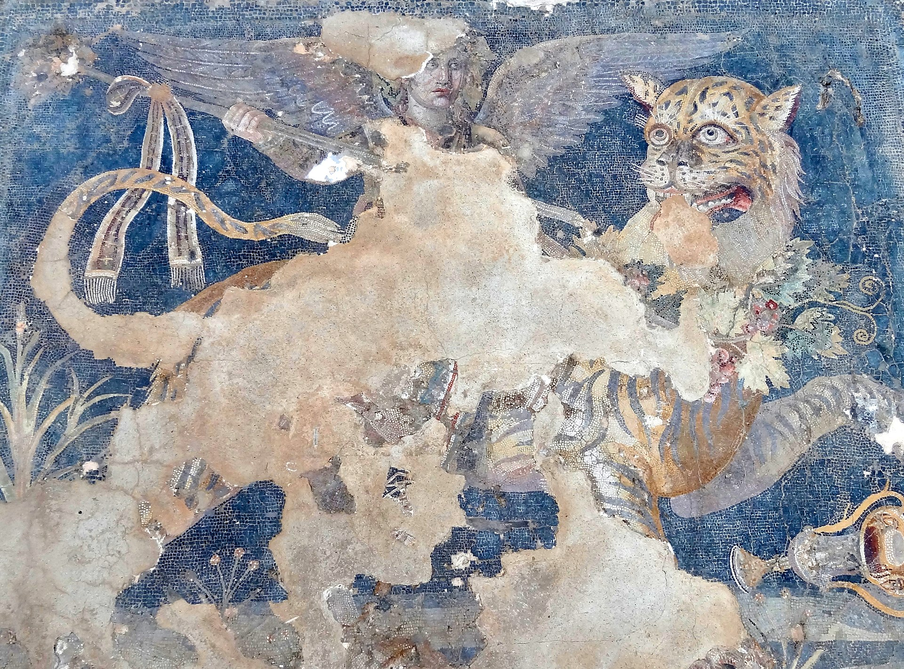

Grid 2
More
Hellenistic mosaics were no longer produced after roughly 69 BC, due to warfare with the Kingdom of Pontus and subsequently abrupt decline of the island's population and position as a major trading center.Among Hellenistic Greek archaeological sites, Delos contains one of the highest concentrations of surviving mosaic artworks. Approximately half of all surviving tessellated Greek mosaics from the Hellenistic period come from Delos.
